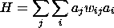
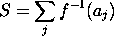

The CsGoodStat computes the overall goodness of the activation state, which is composed of two terms, the harmony and stress. Harmony reflects the extent to which the activations satisfy the constraints imposed by the weights. It is just a sum over all units of the product of the activations times the weights:
The stress term reflects the extent to which unit's activations are "stressed" at their extreme values. It is just the inverse sigmoidal function of the unit activation values:

The total goodness is just the harmony minus the stress. These values
are stored in the hrmny, strss, and gdnss stat
value members of the goodness stat. Also, there is an option
(netin_hrmny) to use the net input to a unit in computing the
harmony term, since harmony is just the unit's activation times its net
input. This should be used whenever it is safe to assume that the net
input reflects the current activation states (i.e., most of the time).
The example project in `demo/cs/figgr.proj.gz' shows how the
goodness function measures the quality of the constraint satisfaction
over time in a large-scale constraint satisfaction problem.